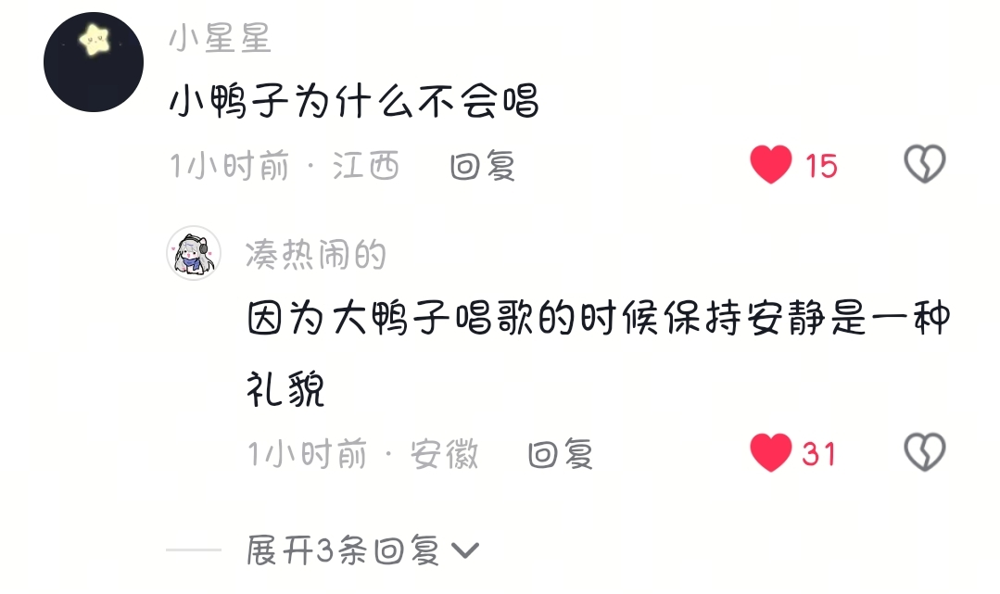
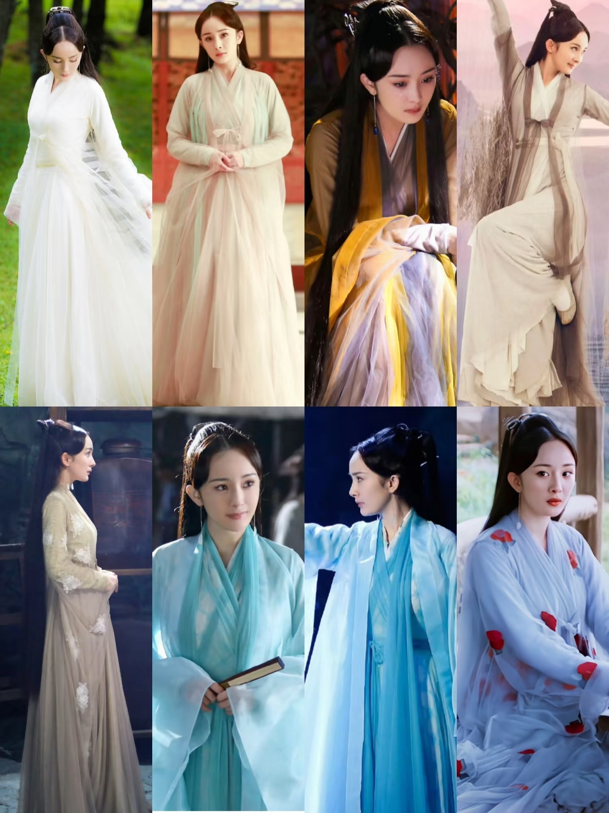

在小事不会选择你的人，在大事上同样不会
短剧终于颠成我想要的样子[鞠躬]
我们是懒惰的妈妈+勤快的爸爸=勤快的娃[泪奔]
懒惰的爸爸➕懒惰的妈妈＝勤快的娃
听完感觉自己长这样
谁还记得你是几号的？我先说我是13号
听完歌后，你获得永久的幸运值
好喜欢这个回覆 感觉暖暖的[流泪] 
小鸭子为什么不会唱
看了好久，这个主播了小鸭子经常唱活泼开朗的歌还是一只天真听话未成年小鸭 大鸭子温柔稳重还很照顾小鸭子 保罗很有个性像是处于叛逆期一样但是他真的很自信[流泪]
我以前看书能看到半夜，周六日带孩子泡在图书馆里，自从刷了抖音之后，没有耐心的看完一本书了
后面的剧学都学不像，三生三世当时的衣服是纱，但都是一层叠一层的，有不同的造型和纹样，衣服非常有质感不是那种便宜的纱，还要来拉踩说丧葬风出自三生三世[微笑]
那些说丧葬风的怕不是眼睛出问题了 
层层叠叠的纱，而且不是纯白，看得出来的质感，后面的丧葬风学歪了还要说三生三世学的
丧葬风是从千古玦尘开始的[泣不成声]色彩鲜艳是从长月烬明开始的，印象深刻
白浅的衣服可是超美的 后面的都是白纱 也不知道咋回事[捂脸]
三生三世的衣服是高端专卖店，其它电视剧的衣服都是某多多[捂脸]
白浅的衣服可以说是这几年仙侠古装的天花板了，每一套都好看
这明明是水墨风，有古风气质很漂亮，跟丧葬有一毛钱关系吗？
三生三世开始后面都是丧葬风，按我的理解是后面学三生三世的学成了丧葬风[捂脸]
好多层纱纱堆出来的仙气感 怎么会是丧葬风 真服了那些眼睛长后脑勺的人 无脑黑[流泪]
石老师全国人民支持您！[赞][赞][赞][赞][赞][赞][赞][赞][赞]
Read more: